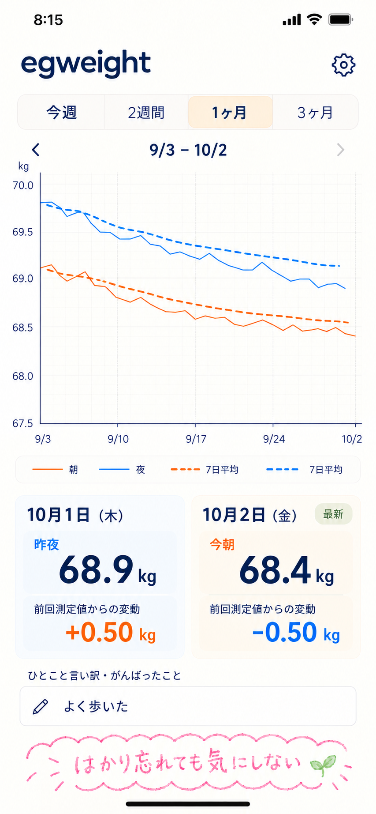
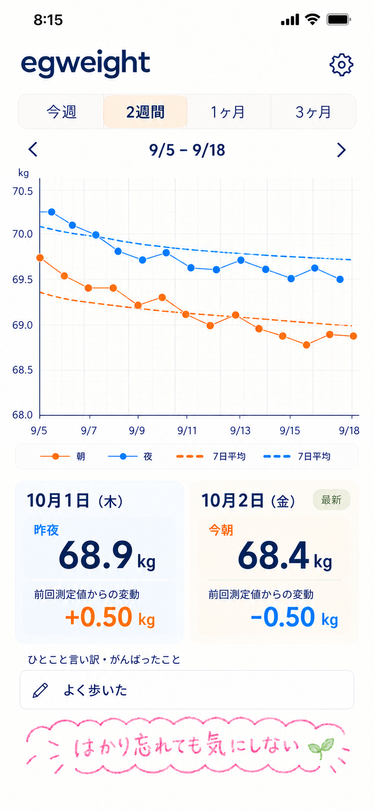

どんなアプリ？
egweight は、Appleの「ヘルスケア」に保存された体重を、朝と夜に分けて折れ線グラフで振り返るiPhoneアプリとして開発を進めています。
1回の増減だけで結論を出さず、朝は朝、夜は夜という同じ時間帯の変化を眺められるように。それぞれの7日間の移動平均を重ね、日々の数字と続けて見える傾向を一緒に確認できる設計です。
数字にひとこと添える欄には、食事や日常の出来事、よく歩いたこと、測り忘れたことも気軽に。増減や欠測を責めず、また始めやすい「やさしい日記帳」を目指します。
はかり忘れても気にしない。
思い出したら再開して！
予定している主な機能
ヘルスケアから体重と歩数を取得
体重を測定時刻で分類し、同じ時間帯に複数回測ったときは最後の測定値を使います。歩数も読み取り、1日10,000歩以上の日は、その日の夜の測定カードに🎖️を添える予定です。朝カードには付けず、カードでの歩数の数値表示は保留しています。日別一覧では歩数を数値で確認できる予定です。
朝と夜を分けて表示
朝はオレンジ、夜は青。横の位置も少しずらして見分けやすくします。昼の記録は参考情報として持ち、グラフには朝と夜だけを表示します。
朝・夜それぞれの7日平均
過去7日間にある測定値だけで平均を計算し、測定日数も確認できます。測れなかった日を0kgとして扱うことはありません。
期間を動かして振り返る
今週・2週間・1ヶ月・3ヶ月を切り替え、矢印やグラフの左右スワイプで過去へ。下の最新測定値はそのままに、以前の変化を見られます。
日別一覧で記録を確認
日付・朝・夜・歩数・メダルを1日1行にまとめ、最新の日付を上にして、スクロールで過去へ進める予定です。一覧も「やさしい日記帳」の雰囲気を引き継ぎ、年ごとの見出しと柔らかな表に分け、年の境目に区切りを設けます。朝か夜の片方が未測定なら空白にし、両方とも記録がない日は歩数があっても一覧から省きます。一覧のメダルは日別の歩数で判定し、朝だけ測った日でも10,000歩以上なら🎖️を表示します。
差分と、ひとことの振り返り
朝と夜、夜と翌朝の変動を確認し、設定した目安に応じてひとことの振り返りを促します。「ひとこと言い訳・がんばったこと」は、注意の有無にかかわらず任意で記録できる予定です。
差分の目安は試用しながら調整します。数値の変化から、食べ過ぎ・運動量・体調の原因を判定する機能は設けません。
基本的な使い方
以下は、プロトタイプで予定している操作の流れです。実装・試用を通じて調整します。
- ヘルスケアと連携する。 egweightで体重と歩数の読み取りを許可します。使用する体重計や測定元アプリから、体重がヘルスケアに保存されていることが前提です。
- 自分のペースで測る。 朝だけ、夜だけ、測れない日があっても続けられる設計です。朝は03:00〜11:59、夜は18:00〜翌02:59に分類し、深夜の測定は前日の夜として扱います。
- グラフで変化を眺める。 期間を選び、＜ ＞または左右スワイプで移動します。初期案では右へのスワイプで過去、左で新しい期間へ。上の日付範囲がグラフに連動し、下の最新値は維持されます。
- 一覧で日々の記録を見る。 日付ごとの朝・夜の体重と歩数、メダルを確認します。最新の日から下へスクロールして、測定した日を振り返ります。
- ひとこと残す。 メモ欄をタップして、言い訳やがんばったことを記録します。カードの変動とグラフの点では比較する測定が異なるため、詳細で比較元も確認できるようにします。
| 期間 | 測定値の表示 |
|---|---|
| 今週（過去7日） | 前回の同じ時間帯からの増減を▲・▼・●で表示 |
| 2週間（過去14日） | 測定点をすべて●で表示 |
| 1ヶ月（過去30日） | 点を表示しない、シンプルな折れ線 |
| 3ヶ月（過去90日） | 点を表示しない、シンプルな折れ線 |
どの期間でも朝・夜の7日平均を表示し、未来の日付へは進みません。今週の●は前回の同じ時間帯との差が−100g〜＋100gの場合。2週間の●は測定がある位置を示します。
画面のイメージ
やさしい配色と方眼グラフを中心にした、画像生成によるUIデザイン案です。日付・体重・メモは架空の例で、動作確認済みのアプリ画面ではありません。画像を選ぶと大きく表示できます。

測定点を省いた折れ線と、朝・夜の7日平均。UIデザイン案。

2週間の丸い測定点と左右の期間移動。UIデザイン案。
画像は雰囲気と配置の参考です。点の位置や平均線の数値の正確さを示すものではなく、実装時に仕様に合わせて仕上げます。実機スクリーンショットはプロトタイプの準備後に掲載します。
利用に向けて
どの体重計でも使えますか？
ヘルスケアに体重が保存されることが前提です。体重計への直接接続は初期版の対象に含めず、使用する測定元アプリとの連携を実機で確認する予定です。
記録がない日や、片方しか測っていない日は？
測定値を作って補わず、ある記録を使って振り返ります。グラフの下は、右に最新、左にひとつ前の朝・夜の測定値を表示します。例えば3日ぶりに測った場合、左には前回の日付と「3日前」を併記する予定です。差分は必要な朝夜ペアがそろう場合に計算し、比較できない場合はそのことが分かる表示にします。
体重やメモはどこに保存しますか？
体重の原本はヘルスケア、メモは端末内に保存する方針です。メモの復元や機種変更時の扱いは検討中です。保存範囲とプライバシーの説明は、配布前に整えます。
開発状況と公開について
現在は設計・開発段階で、一般公開・配布していません。 機能とUIの方向性を整理し、プロトタイプの実装を準備しています。このサイトで公開しているのは紹介ページです。
ヘルスケア連携、計算、グラフの操作、メモ保存はこれから実装・実機検証を進めます。対応するiPhone・最低対応OS、公開時期、配布方法、価格は未定です。ダウンロードや試用の募集は現在行っていません。
掲載内容は2026年10月1日時点の設計に基づきます。機能・操作・画面は今後変更される場合があります。健康状態や減量の成否を判断するアプリではなく、数値とメモを振り返るための道具として設計しています。